洪水想定区域：最大規模 操作マニュアル
1. 洪水想定区域：最大規模とは
本ページでは、国土交通省が公開している「国土数値情報 洪水浸水想定区域データ」を利用して、浸水シミュレーションが実施された後の被害エリアを選択し、そのエリアの損害額を調査する手順を説明しています。
2. 使い方
2-1. 起動
「plateau_hazard_simulation.aprx」をダブルクリックし、ArcGIS Pro を起動ください。※起動時に認証が求められた場合は、お持ちのアカウントのID/PWでサインインください。 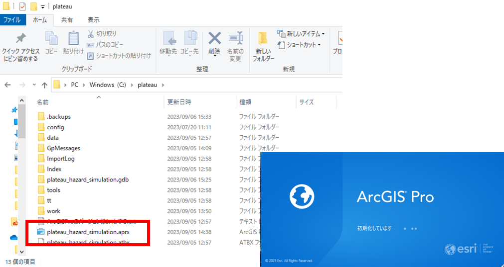
タスクウィンドウを表示させます。 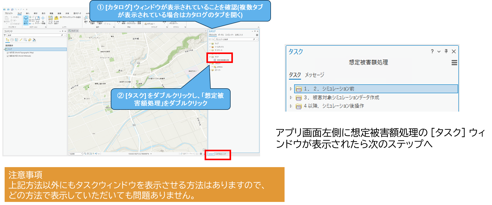
2-2. 「1.2. シミュレーション前」の実行
シミュレーションを行いたい3D都市モデル（FGDB形式）を指定し、読み込みます。 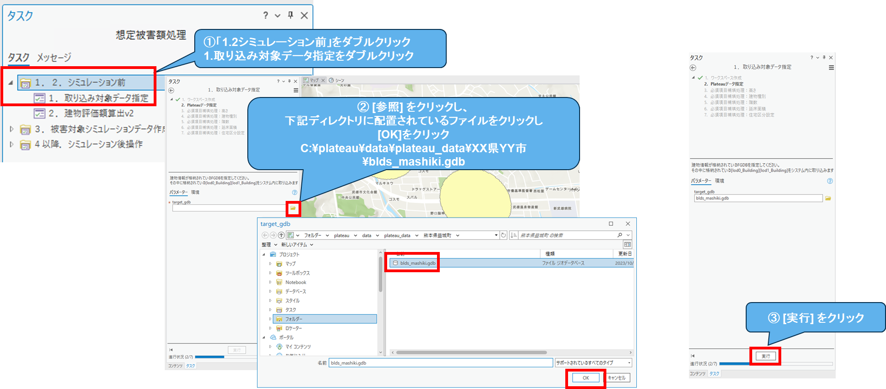
読み込んだ3D都市モデル（FGDB形式）に対して評価額を算出します。 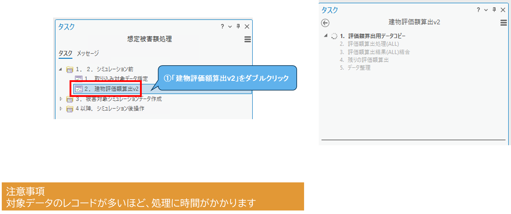
2-3. 「3. 被害対象シミュレーションデータ作成」の実行
被害シミュレーションデータの事前処理を行います。 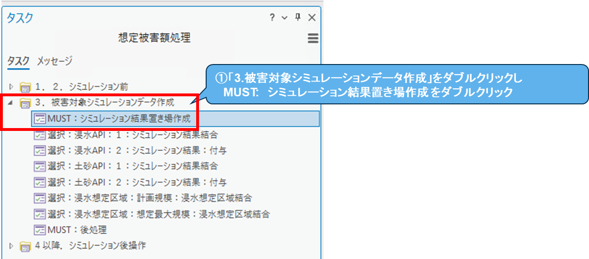
想定最大規模の浸水想定区域から浸水エリアを指定します。 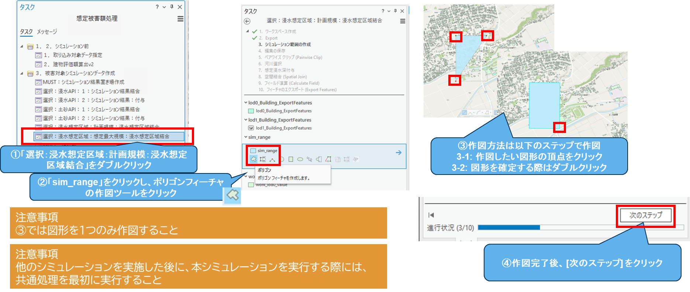
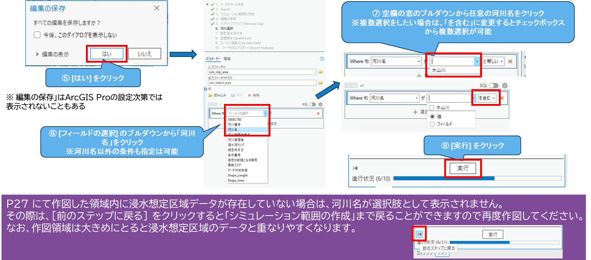指定後、シミュレーション結果と建物情報を結合します。 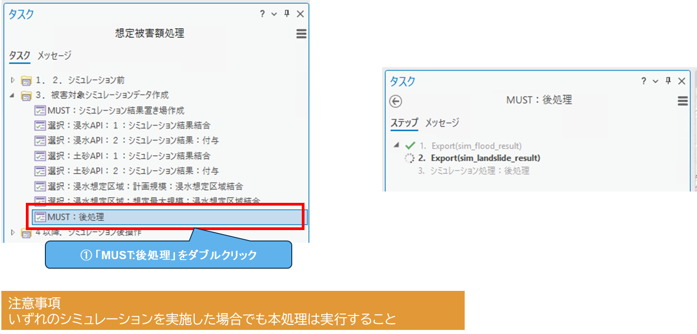
2-4. 「4. シミュレーション後操作」の実行
損傷率と損害額を算出します。 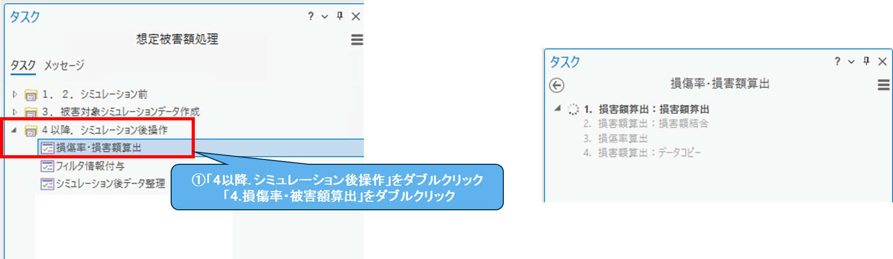
建物情報に契約情報と建物不動産IDをひも付けます。 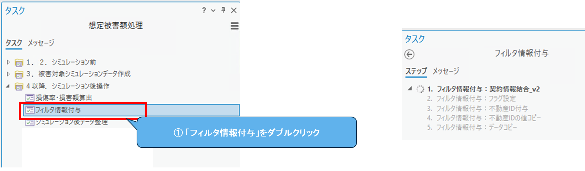
ポップアップなどで使用する論理名（エイリアス）を設定します。 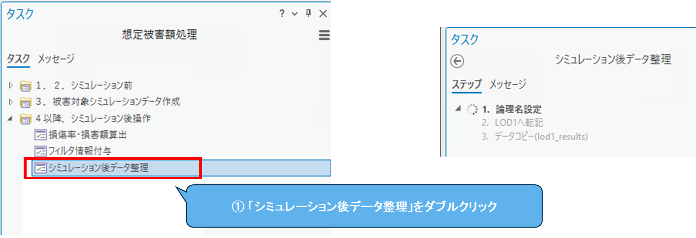
2-5. シミュレーション結果を確認する
2-4.までで全ての処理が完了しました。個々の建物をクリックすると、結果の詳細を確認できます。
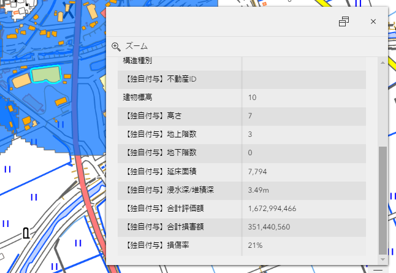